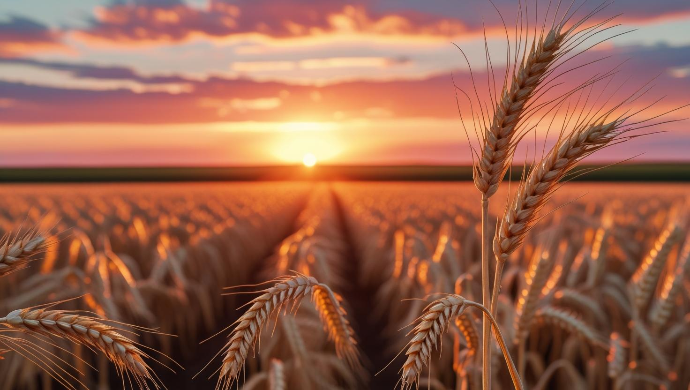

A novela brasileira "O Cravo e a Rosa", ambientada na década de 1920, narra a trajetória de Petruchio, um agricultor que busca ampliar seus negócios além do meio rural. A trama ilustra os limites de uma época marcada pela simplicidade e pelo distanciamento entre campo e cidade. Embora tais contrastes tenham sido evidentes no passado, esse cenário está se transformando com os avanços tecnológicos no campo, que intensificam a aproximação de zonas rurais e urbanas. Essa integração fortalece a economia e valoriza o trabalho rural, historicamente negligenciado.
A princípio, a aproximação entre campo e cidade impacta diretamente a economia. A aplicação de tecnologias urbanas como drones, inteligência artificial e robótica, no contexto rural facilita diversos processos agrícolas, desde o plantio até a comercialização dos produtos. Essas inovações tornam as etapas mais eficientes e lucrativas, resultando num aumento significativo da produtividade e otimização dos recursos. Assim, a agricultura se torna mais sustentável, estimulando o comércio e a geração de empregos, consequentemente fortalecendo a economia regional.
Nesse contexto, a valorização do trabalho rural é impulsionada pelos avanços tecnológicos, que demonstram que o campo não se resume à força bruta, mas também envolve inteligência, técnica e inovação. A incorporação de recursos como softwares agrícolas e automação tem sido fundamental para transformar a imagem do meio rural, que agora é reconhecido como um novo polo tecnológico, ressignificando sua identidade sociocultural.
Portanto, é evidente que a integração entre campo e cidade gera benefícios significativos para toda a sociedade. Essa conexão representa não apenas avanços tecnológicos, mas uma transformação cultural e social, que rompe estereótipos e reconhece o papel dinâmico e inteligente do agronegócio. Assim, diante dos desafios globais como insegurança alimentar e mudanças climáticas, investir nessa integração é algo estratégico e necessário para a construção de um futuro realmente sustentável, próspero e justo para todos.
O Brasil é uma grande potência agrícola, sendo um dos principais produtores e exportadores de várias commodities como carne bovina, suco de laranja, açúcar e café.
A cidade concentra maior densidade de objetos técnicos, como estradas, iluminação e meios de transporte, que facilitam a vida e impulsionam a produção.